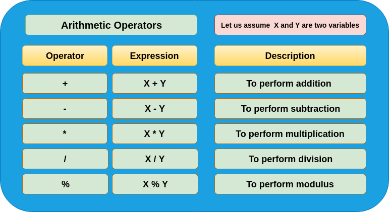
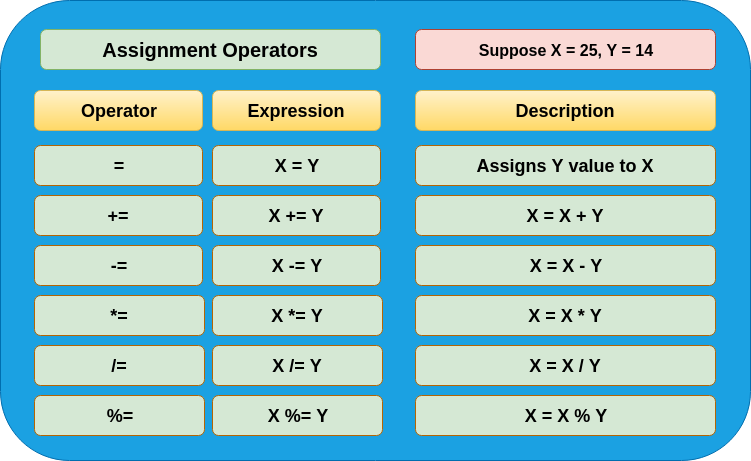
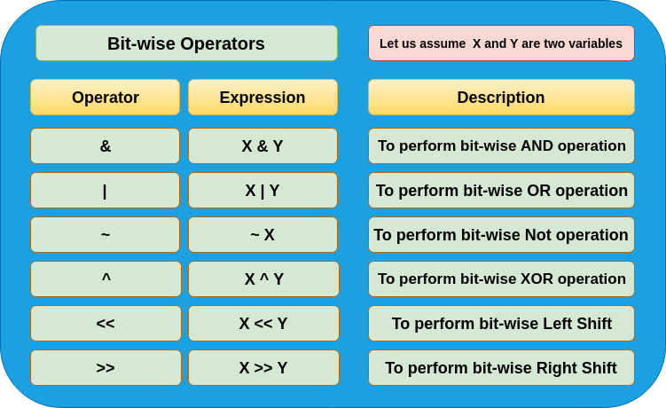
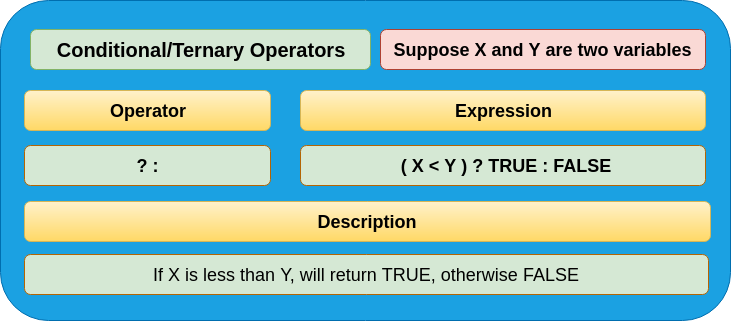

Introduction to C
C is a programming language developed at AT & T’s Bell Laboratories of USA in 1972 by Dennis Ritchie.
C is modular, portable, reusable
* Features Of C Programming

* C is...
Structured language :-
- It has the ability to divide and hide all the information and instruction.
- Code can be partitioned in C using functions or code block.
- C is a well structured language compare to other.
General purpose language :-
- Make it ideal language for system programming.
It can also be used for business and scientific application.
- ANSI established a standard for c in 1983.
- The ability of c is to manipulate bits,byte and addresses.
Keywords in C
Keywords are the words whose meaning has already been explained to the C compiler.
There are only 32 keywords available in C. The keywords are also called ‘Reserved words’.

Structure Of C Programming
A C program is divided into different sections. There are six main sections to a basic c program.
The six sections are,
Documentation
Link
Definition
Global Declarations
Main functions
Subprograms

The whole code follows this outline. Each code has a similar outline. Now let us learn about each of this layer in detail:-
- Documentation Section :-
The documentation section is the part of the program where the programmer gives the details associated with the program. He usually gives the name of the program, the details of the author and other details like the time of coding and description.
It gives anyone reading the code the overview of the code.
- Link Section :-
This part of the code is used to declare all the header files that will be used in the program. This leads to the compiler being told to link the header files to the system libraries.
- Definition Section :-
In this section, we define different constants. The keyword define is used in this part.
#define PI=3.14
- Global Declaration Section :-
This part of the code is the part where the global variables are declared. All the global variable used are declared in this part. The user-defined functions are also declared in this part of the code.
- Main Function Section :-
Every C-programs needs to have the main function. Each main function contains 2 parts. A declaration part and an Execution part. The declaration part is the part where all the variables are declared. The execution part begins with the curly brackets and ends with the curly close bracket.
Both the declaration and execution part are inside the curly braces.
- Sub Program Section :-
All the user-defined functions are defined in this section of the program.

Rules for Writing, Compiling and Executing the C program.
- C is case sensitive means variable named "COUNTER" is different from a variable named "counter".
- All keywords are lowercased.
Keywords cannot be used for any other purpose (like variable names).
- Every C statement must end with a " ; ". Thus ";" acts as a statement terminator.
- Blank spaces may be inserted between two words to improve the readability of the statement.
However, no blank spaces are allowed within a variable, constant or keyword.
- Variable must be declared before it is used in the program.
- File should be have the extension .c
- First character must be an alphabet or underscore, no special symbol other than an underscore, no commas or blank spaces are allowed with in a variable, constant or keyword.
- Program need to be compiled before execution.
Variables
In the C Programming Language, variables are used to store various types of data.
Variables must be defined before they can be used within a program. Variable declarations include the type of the variable and, optionally, its initial value.
The syntax for declaring a variable in the C language is:-
c_type variable_name1 [= value1];
Declaration statements must end with a semicolon.
Parameters or Arguments
c_type
The type of the variable being declared.
variable_name1
The name of the first variable to declare.
value1
Optional. If provided, it is the value to assign to variable_name1.
variable_name2, ... variable_name_n
Optional. These are additional variables that will be declared with the same C type.
value2, ... value_n
Optional. These are the values that you wish to assign to variable_name2 through variable_name_n.
Data types & Placeholders
Data type defines a set of values that a variable can store along with a set of operations that can be performed on it.
C has 5 basic built-in data types.
A variable takes different values at different times.
General form for declaring a variable is:-
type name;
Common data types are:-
- int - integer
- char - character
- long - long integer
- float - float number
- double - long float
Other placeholders are:-
- %c - Character
- %d - Signed decimal integer
- %i - Signed decimal integer
- %e - Scientific notation[e]
- %E - Scientific notation[E]
- %f - Decimal floating point
- %o - unsigned octal
- %s - String of character
- %u - unsigned decimal integer
- %x - unsigned Hexadecimal (lower)
- %X - unsigned Hexadecimal (upper)
- %p - dispaly a pointer
- %% - print a %
Operators
The symbols which are used to perform logical and mathematical operations in a C program are called C operators.
These C operators join individual constants and variables to form expressions.
Operators, functions, constants and variables are combined together to form expressions.
Consider the expression A + B * 5. where, +, * are operators, A, B are variables, 5 is constant and A + B * 5 is an expression
Operators in C are :-

Types of Operators
Unary Operators.
The unary operator works on a single operand or variable. Increment/Decrement operators also called as Unary operators.
Binary Operators.
The binary operator works on two operands or variables like arithmetic operator, relational operator, bit-wise operator assignment operator, and logical operator.
Ternary Operators.
The ternary operator works on more than two operands or variables like conditional operator. The conditional operator also called a ternary operator.
- Arithmetic Operators.
These operators are used to perform mathematical operations. e.g. Addition, Subtraction, Multiplication, Division, Modulus.

- Assignment Operators.
These are used to assign the values for the variables in C programs.

- Increment/Decrement Operators.
The increment / Decrement operators are used to perform increment/decrement operation.
In the case of increment operation the value of operand or variable incremented by one, while in the case of decrement operation the value of operand or variable decremented by one.
e.g. x++, ++x, x–, –x.

- Bitwise Operators.
The bitwise operators are used to perform bit-wise operations on operands or variables. e.g. bit-wise AND operation, bit-wise OR operation, etc.

- Conditional/Ternary Operators.
The conditional or ternary operator is used to perform the conditional operation on three operands or variables. e.g. If the condition is true, it returns first value i.e. TRUE case value, otherwise returns second value i.e. FALSE case value.

- Logical Operators.
The logical operators are used to perform the logical operation on two operands or variables. e.g. AND operation, OR operation, NOT operation.

- Relational Operators.
The relational operators are used to perform the relational operation between two operands or variables. e.g. comparison, equality check, etc.